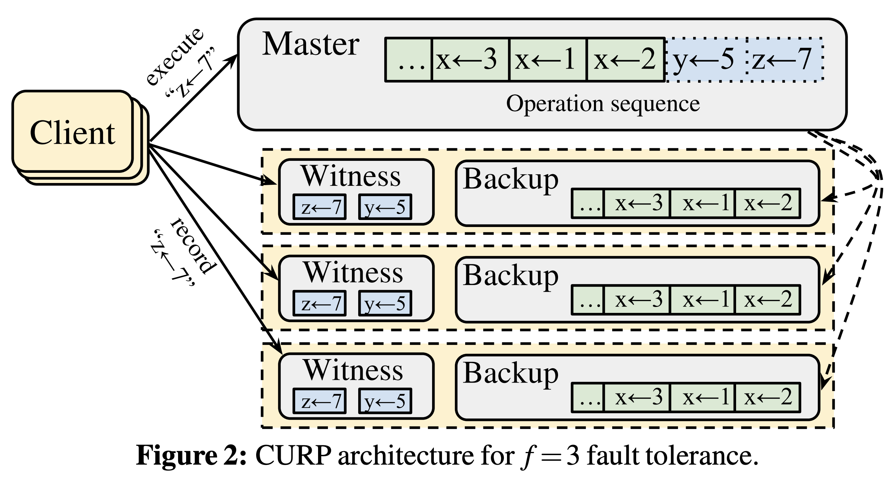

참고한 것들
원본 논문
- 이 글은 Exploiting Commutativity For Practical Fast Replication, NSDI’19 에서 핵심 아이디어만 요약한 글입니다.
- 별도의 명시가 없으면, 본 논문에서 그림을 가져왔습니다.
CURP
- 일단 기존의 VR, Paxos, Raft 와 같은 애들은 전부 distributed environment 에서 “실행 순서에 대한 consensus” 를 맞추기 위해 2-RTT 를 필요로 했다.
- 이들의 공통점은 client-leader 간의 통신이랑, leader-follower 간의 통신 총 두번의 RTT 가 필요하다는 것이다.
- 이 문제를 해결하기 위해 CURP (Consistent Unordered Replication Protocol) 은 “Commutativity” 에 초점을 맞춘다.
- Commutativity 라는 것은 수학에서 교환법칙을 생각하면 된다.
- 즉, 교환이 가능하다는 것은 ordering 이라는 것이 애초에 필요가 없기 때문에 이런 operation 들은 ordering 없이 1-RTT 에 끝낼 수 있다라는 것이 여기에서의 핵심 아이디어이다.
- 그럼 Commutativity 에 대해 먼저 좀 알아보자.
Commutativity, Conflict
- Commutativity 라는 것은 위에서 말한 것처럼 “교환 가능한” 이라는 의미를 담고 있다.
- 그럼 어떤 것이 교환 가능하다는 것일까? 그것은 operation 실행 순서가 교환 가능하다는 뜻이다.
- Operation 은 크게 read 와 write 로 나뉠 수 있고, 이때 두 operation 에 대해서는 다음과 같은 경우의 수가 가능하다.
- (1) Read-after-read, (2) Read-after-write, (3) Write-after-read, (4) Write-after-write
- 이 경우의 수에 대해, commutative 한 상황들을 좀 보면
- 일단 (1) Read-after-read 의 경우에는 순서가 아예 상관이 없다. 당연히 commutative 하다.
- (2) 에서는 순서가 상관 있긴 하지만, 만약에 (KV store 에서) 서로 다른 key 에 접근하고 있다면, 순서가 바뀌어도 상관 없을 것이다. 즉, 접근하는 key 가 다르다면 commutative 하다.
- 마찬가지로 (3) 와 (4) 의 경우에도 접근하는 key 가 다르다면 commutative 하다는 것을 알 수 있다.
- 반대로, 동일한 key 에 접근하여 commute 가 불가능한 경우에 대해서는 Conflict 라고 부른다.
Fast-path, Slow-path
- 만약 어떤 operation 이 commute 하여 ordering 없이 1-RTT 에 끝날 수 있다면, 이때 수행되는 작업을 Fast-path 라고 부른다.
- 혹은 Frontend 라고 부르기도 한다.
- 반면에 conflict 가 있어 ordering 이 필요하다면, 이때는 Slow-path 라고 한다.
- 이놈은 Backend 라고 부르기도 한다.
- 그럼 이 각각의 path 에 대해 어떻게 처리되는지 살펴보자.
Architecture

- 그럼 이제 CURP 에서의 architecture 를 한번 보자.
- 일단 전체적으로는 인종차별적인 master-backup 구조를 가진다.
- Master 와 Backup 은 각 node 의 role 로, 이 role 에 따라 request 를 받았을 때 서로 다른 operation 을 한다.
- 그리고 위 그림에서 녹색 공간은 persistent data (storage 에 저장된) 이고, 파란색 공간은 in-memory 공간이다.
- 또한 VR 에서 처럼, 이 master 와 backup 모두 state machine log 를 갖고 있다.
- 여기서 Witness 라는 것이 나오는데, 이놈은 C++ 에서 unordered map 이라고 생각하면 된다.
- 즉, operation 들을 key 에 따라 in-memory hash table 로 logging 하는 공간이다.
- 따라서 이 공간은 두 가지 용도로 사용될 수 있다:
- Fast-path 에 대한 operation 을 logging 하는 공간이자
- Conflict 발생 여부를 확인할 수 있는 공간이다.
- 당연히 key 에 대한 operation 이 value 로서 들어가있기 때문에, 해당 key 에 대해 이미 value 가 존재한다면 (물론 write operation 일때) conflict 가 나게 되는 것.
- 이때 너무나 많은 key 가 주입되어 witness 에 대해 메모리 사용량이 너무 커지지는 않을까 생각할 수 있는데, 그렇지는 않다.
- 뒤에서 설명하겠지만, conflict 를 처리하는 과정에서 여기에 있는 entry 들을 싹 다 persistent 하게 만들며 witness 를 비우기 때문.
- 그럼 위 architecture 를 기반으로, 어떻게 operation 이 handling 되는지 보자.
Fast-path Protocol
- 위의 그림 그대로, request 가 들어왔다고 해보자.
- 일단 client 는 cluster 의 모든 node 에 request 를 broadcast 한다.
- Master 는 request 를 받아 in-memory state machine log 에 적고, 바로 ACK 를 날린다.
- Backup 은 witness 를 보고 conflict 인지 파악한다.
- 위 예시에서는 witness 에 인 entry 가 없기 때문에 conflict 가 아니고, 따라서 witness 에 적은 뒤 바로 ACK 를 날린다.
- Client 는 Majority quorum (즉, ) 만큼의 response 가 올때까지 기다리고, 그 이후에 request 가 성공했다고 판단한다.
- 따라서 이때는 1-RTT 에 종료되는 것을 확인할 수 있다.
Slow-path Protocol
- 위의 그림에서, request 이후에 가 들어왔다고 해보자.
- 일단 client 는 마찬가지로 cluster 의 모든 node 에 request 를 broadcast 한다.
- Master 는 마찬가지로 in-memory state machine log 에 적는데, conflict 가 발생했으므로 client 에게
KEY CONFLICT메세지를 보내고 ordering 을 하기 위해 backup 들에게APPEND ENTRIES메세지를 async 하게 보낸다.- 생각해 볼 것은 master 는 별도의 witness 는 없다는 것이다.
- 물론 이런 conflict detection 을 위해 hash table 와 같은 자료구조가 필요할 수는 있다.
- 하지만 master 의 ordering 을 기준으로 backup 들의 order 가 맞춰지기 때문에 (비록 이 시점에는 order 가 안맞지만), 즉, backup 의 order 는 master 의 order 를 바라보기 때문에, 이 master 에게는 ordering 이 필요 없고, 따라서 fast-path 를 위한 공간은 필요 없게 된다.
- 이에 따라 master 에게는 ”Witness” 가 필요 없는 것.
- Backup 은 witness 를 보고 conflict 가 발생했다는 것을 알고, 해당 request 를 거부 (Refuse) 하게 된다.
- 따라서 client 는 majority quorum 만큼의 성공 메세지를 받지 못하기 때문에 (그리고
KEY CONFLICT메세지를 받았기 때문에), slow path 가 끝날 때까지 기다린다. - Slow path 에서는 master 가 자신의 log 를
APPEND ENTRIES에 실어 backup 들에게 보내 이것을 기준으로 order 를 맞추게 한다.- 따라서 backup 들은 이 order 를 기준으로 witness 에 있는 모든 operation 들을 order 에 맞게 persistent 하게 만든다.
- 그리고 이것이 종료되면, master 에게 성공 메세지를 보낸다.
- Master 는 backup 들로부터 majority quorum 만큼의 성공메세지가 오는지 확인한 뒤에, client 에게 메세지를 보내 해당 operation 을 마무리짓는다.
- 따라서 이때는 3-RTT 라는 penalty 를 안게 되는 것을 확인할 수 있다.